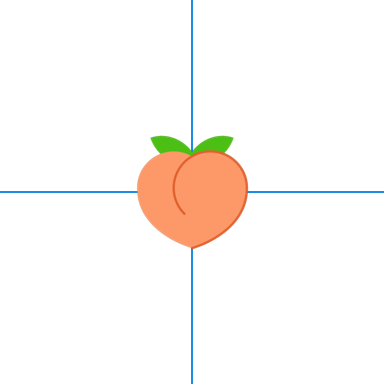

1 Introduction
-
Characterizing the spatial network epidemiology of an infectious disease
Infectious disease outbreaks are increasing in frequency with climate change.
It is important to develop methods that aid us to quickly and deeply understand outbreaks of new infectious pathogens to enable informed control interventions.
We present a set of methods for characterizing the structure of the network that connects people through the places they co-attend, and places through the people they co-host.
We do this using a custom-designed online survey tool to elicit and analyze the geographic patterning of locations at which the risk of transmitting a pathogen is heightened
-
The first application for these methods relates to group sex among sexual and gender minorities in New York City.
Since all sex or contact must happen at a commonly occupied physical location, the movement of individuals across psychical space is a necessary condition for an outbreak of sexually transmitted infection to happen.
Patterns of movement across the city offer unique insights about the spatial epidemiology of any sexually transmitted disease, or any health state that requires spatial proximity to spread.
Patterns of mixing across social categories help us to understand the evolution of the epidemic
-
Other than violence and social exclusion, the high prevalence and incidence of HIV, STIs and MPOX is often attributed to the density of sexual networks, but networks are not empirically measured.
Studies with measured social networks are mostly egocentric - this does not allow for measurement of network structure, only perceptions of network structure
Studies that consider sociocentric networks are mostly modelled or simulated - network structure is a function of modelling decisions and modelling parameters, rather than a function of observed data.
-
Group sex is understudied, and is likely an important driver of MPOX
few epidemiologic studies quantify and contextualize group sex
was shown to be an important driver of oubreaks in Europe and in the US following major regional events with group sex and group contact
likely an important driver of extant epidemics of syphillis, HIV, and other sexually transmitted infections among sexual and gender minorities
-
The MPX NYC survey is a project of the RESPND-MI study.
RESPND-MI is a collective of activists and researchers which formed to respond to the 2022 novel outbreak of MPOX among sexual and gender minority individuals across the world.
-
We introduce novel methods for collecting and analyzing spatial social network data
the map-input question format we designed, tested and implemented for the MPX NYC study
We introduce a framework and a set of descriptive statistical tools for analyzing map-input question data
-
The overall study goal is to use patterns of movement and mixing to reason about the likely impact of a place-based intervention on the dynamics of an outbreak of novel infectious disease.
Characterize the venues in which group contact (physical or sexual contact in a setting with more than two people) occurs as well as the geographic patterning of participant residences and contact venues
Characterize patterns of movement between community districts among participants move between residence and contact venues.
Characterize the sexual/physical contact network implied by the geographic patterning of residences and contact venues
Examine the impact of a simplified, spatially-targeted intervention to immunize the population represented by the MPX NYC participants against a novel pathogen.
Background In 2022, the MPOX (previously Monkeypox) virus emerged as a global pathogen largely infecting queer men via social and sexual networks. As a response, we initiated a study to understand the best use of targeted resources to protect individuals across these networks of interaction through social media and vaccination campaigns.
Possible Directions:
Contextualize the MPX outbreaks in the immediate contemporary history of how marginalized populations were disproportionately impacted by COVID-19 and were last to receive some benefit
Contextualize MPX in the more distant history within HIV, comparing the fact that many contemporary communities impacted disproportionately by MPX overlap with those still in the midst of the HIV epidemic despite availability of many disease controlling and treatment interventions (Black/Latine Trans folks with decrease PREP availability etc, caveat with cisgender black women being highest growing demographic of new HIV infections as far as a I know)
Importance of addressing densely networked communities like the queer communities methodologically in epidemiologic studies though it is often unaddressed
The aims of the analysis are to: a) describe participants according to sociodemographic characteristics, connection with queer and transgender communities, and utilization of health care services; b) describe spatial patterns of social and sexual connection across congregate settings in New York City; and c) assess the potential impact of a hypothetical, place-based intervention to halt transmission of a novel infectious disease.
Mpox (also known as monkeypox) is a zoonotic disease caused by the Monkeypox virus.1 The first animal-to-human transmission was described in the 1970s in the Democratic Republic of the Congo.2 Since the initial case in humans, sporadic outbreaks were reported in west and central Africa, typically originating from contact with enzootic reservoirs in rural areas.3 However, scientists had predicted that mpox infections would persist, increasing in magnitude and severity with declining population immunity. In 1997, a shift was noticed in the epidemiologic and clinical profiles of mpox, with increased human-to-human transmission and decreased symptom severity.3,4 Despite these concerns, research into mpox has been neglected and underfunded for decades in regions where it has been endemic.
In July 2003, the first report of mpox outside of Africa occurred in an outbreak of 72 confirmed or suspected cases in the United States.5 Since then, travel-associated cases outside Africa have had limited secondary spread in Europe, North America, and Asia, indicating inefficient human-to-human transmission.6–9 However, the recent outbreak of mpox—consisting of community spread of a new mpox virus lineage, clade 2b—has caused concern worldwide, with the first significant global outbreak occurring in May 2022.1,9 Early cases were almost exclusively among gay, bisexual, and other men who have sex with men, with transmission being associated with sex in congregate settings.1 By the end of May, the outbreak had spread to 50 countries with more than 3000 cases, and by November 2022, it had reached 109 countries with more than 78,000 reported cases.
Epidemiologic evidence in the United States largely reflected the global patterns of mpox transmission. From May to November 2022, 28,072 mpox cases were reported to the Center for Disease Control and Prevention from all 50 states, with 94.8% among cisgender men, 2.6% among cisgender women, 0.7% among transgender women, 0.2% among transgender men, and 0.7% among gender non-binary people.10 Among individuals with information reported on recent sexual or close intimate contact (n = 16,892), 82% reported any sexual or close intimate contact with during the 21 days preceding symptom onset.10 Furthermore, Black and Hispanic or Latina/e/o/x individuals accounted for more than half (52%) of reported mpox cases.11
The United States faced barriers to an effective public health response to the mpox outbreak, particularly in the stockpiling and deployment of vaccines. The safer vaccine, Jynneos, was not mobilized with the intent of halting the outbreak despite early calls from activists. Testing and treatment were also not provided in the early phase of the outbreak. Public health agencies were anticipated to focus on place-based interventions in known public sex venues, but the response was fragmented and did not prioritize communities that were most vulnerable to the outbreak, including Black, Latina/e/o/x, and transgender individuals. Furthermore, recent case reports indicate reinfection of mpox among those previously exposed, suggesting a need for a concerted and coordinated public health effort to mitigate a potential future outbreak.
To inform alternative intervention strategies, and to assess their potential efficiency, we conducted an anonymous, community-led, online survey for sex among queer and transgender residents of New York City (NYC). The MPX NYC survey elicited information on where participants live and where they have had group sex, allowing for the characterization of the spatial distribution of sex, particularly group sex. The efficiency of two approaches to using the data to guide place-based health interventions was compared.